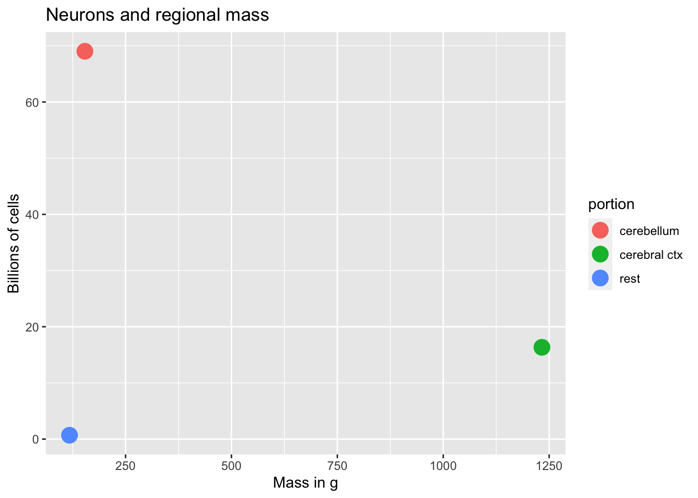
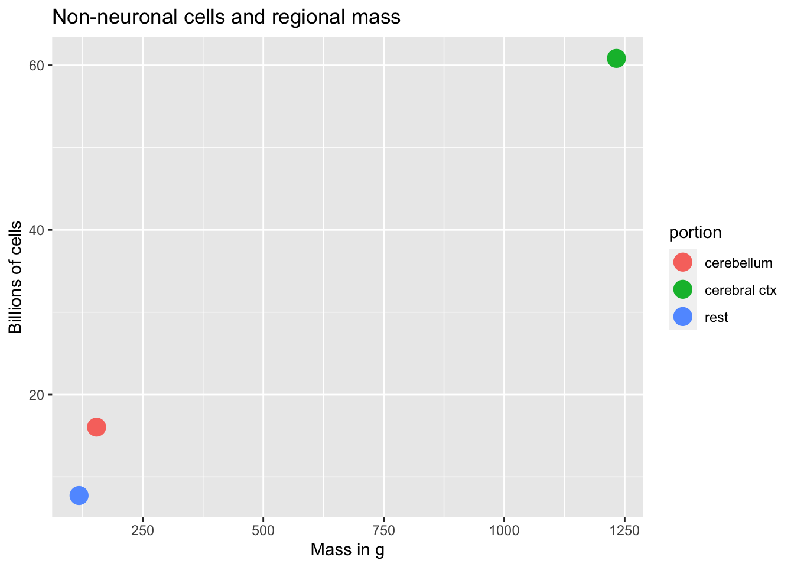

knitr::include_graphics("../include/img/azevedo-et-al-fig-1.jpg")Cellular neuroscience
Cellular neuroanatomy
How many neurons and glia?
- Old “lore”: ~100 billion neurons
- New estimate (Azevedo et al., 2009):
- ~86 +/- 8 billion neurons
- 85 +/- 9 billion glia
“These findings challenge the common view that humans stand out from other primates in their brain composition and indicate that, with regard to numbers of neuronal and nonneuronal cells, the human brain is an isometrically scaled-up primate brain.”



knitr::include_graphics("https://mitpress.mit.edu/sites/default/files/styles/large_book_cover/http/mitp-content-server.mit.edu%3A18180/books/covers/cover/%3Fcollid%3Dbooks_covers_0%26isbn%3D9780262034258%26type%3D.jpg?itok=cF8pgUnB")
Glia (neuroglia)
- Functions
- Structural support
- Metabolic support
- Brain development
Astrocytes
- “Star-shaped”
- Probably most numerous cell type in CNS
- Physical and metabolic support
- Support blood/brain barrier
- Regulate local blood flow
knitr::include_graphics("https://upload.wikimedia.org/wikipedia/commons/5/56/Human_astrocyte.png")
knitr::include_graphics("https://upload.wikimedia.org/wikipedia/commons/thumb/6/63/Astrocyte5.jpg/1024px-Astrocyte5.jpg")
- Interact with neurons
- Ion (Ca++/K+) buffering
- Neurotransmitter (e.g., glutamate) buffering
knitr::include_graphics("https://upload.wikimedia.org/wikipedia/commons/3/3e/Metabolic_interactions_between_astrocytes_and_neurons_with_major_reactions.png")
- Shape brain development, contribute to synaptic plasticity
- Disruption linked to cognitive impairment, disease (Chung, Welsh, Barres, & Stevens, 2015)
Myelinating cells
Oligodendrocytes
- In brain and spinal cord (CNS)
- 1:many neurons
knitr::include_graphics("https://upload.wikimedia.org/wikipedia/commons/thumb/8/8a/Oligodendendrocytes_in_rat_brain.tif/lossy-page1-800px-Oligodendendrocytes_in_rat_brain.tif.jpg")
knitr::include_graphics("https://upload.wikimedia.org/wikipedia/commons/thumb/a/a8/Neuron_with_oligodendrocyte_and_myelin_sheath.svg/615px-Neuron_with_oligodendrocyte_and_myelin_sheath.svg.png")
Schwann cells
- In PNS
- 1:1 neuron
- Facilitate neuro-regeneration
knitr::include_graphics("http://www.sciencellonline.com/media/catalog/product/cache/1/image/a6f8fb4f61eb724cff40f184d1fbcab0/m/1/m1700_3.jpg")
knitr::include_graphics("https://upload.wikimedia.org/wikipedia/commons/thumb/b/bc/Neuron_Hand-tuned.svg/1920px-Neuron_Hand-tuned.svg.png")
- Mnemonics: COPS/SPOC
Microglia
- Phagocytosis
- Clean-up damaged, dead tissue
- Role in ‘pruning’ of synapses in normal development
knitr::include_graphics("https://upload.wikimedia.org/wikipedia/commons/thumb/0/0b/Microglia_and_neurons.jpg/1200px-Microglia_and_neurons.jpg")
Neurons
What makes neurons “special”
- Long-lived (most generated b/w 3-25 weeks gestational age)
- Extended branching (dendrites and axons)
- Electrically excitable
- Connect to small #s of other cells via synapses
- Release neurotransmitters
Macrostructure
- Dendrites
- Soma
- Axons
- Terminal buttons (boutons)
knitr::include_graphics("https://upload.wikimedia.org/wikipedia/commons/thumb/a/a9/Complete_neuron_cell_diagram_en.svg/1280px-Complete_neuron_cell_diagram_en.svg.png")
Dendrites
- Majority of input to neuron
- Passive (do not generate current flows) vs. active (generate current flows like axons)
- “Polarized” or directional information flow
knitr::include_graphics("https://i.stack.imgur.com/kfriB.jpg")
Dendritic Spines
knitr::include_graphics("https://upload.wikimedia.org/wikipedia/commons/b/b1/Dendritic_spines.jpg")
- Concentrate effects of local current flows, biochemical reactions
Soma (cell body)
- Varied shapes
- Nucleus
- Chromosomes
- Organelles
- Mitochondria
- Smooth and Rough Endoplasmic reticulum (ER)
knitr::include_graphics("https://upload.wikimedia.org/wikipedia/commons/thumb/a/a9/Complete_neuron_cell_diagram_en.svg/1280px-Complete_neuron_cell_diagram_en.svg.png")
Axons
Axon hillock
- Transitional zone between soma and axon
Initial segment
- Action potential generated
Nodes of Ranvier
- Gaps in myelin sheath
- Neuronal membrane exposed to extracellular space
- Action potential regenerates
Axon terminals
knitr::include_graphics("http://droualb.faculty.mjc.edu/Course%20Materials/Physiology%20101/Chapter%20Notes/Fall%202007/figure_07_02_labeled.jpg")
Synaptic bouton (terminal button)
- Synapse (~5-10K per neuron)
- Pre- (sending side) and postsynaptic (receiving side) membranes
- Synaptic cleft
- Synaptic vesicles
- Store/release neurotransmitters
knitr::include_graphics("http://antranik.org/wp-content/uploads/2012/04/synapse.jpg")
- Autoreceptors & transporters
knitr::include_graphics("https://media.springernature.com/lw685/springer-static/image/art%3A10.1038%2Fnrn1008/MediaObjects/41583_2003_Article_BFnrn1008_Fig1_HTML.jpg?as=webp")
Monoamine transporters are localized to perisynaptic sites, where they are crucial for the termination of monoamine transmission and the maintenance of presynaptic monoamine storage. Several selective pharmacological agents acting at each monoamine transporter are shown. Amph., amphetamine; DA, dopamine; DAT, Dopamine transporter; L-DOPA, L-3,4-dihydroxyphenylalanine; 5-HT, 5-hydroxytryptamine; MPP+, 1-methyl-4-phenylpyridinium; MDMA, (+)-3,4-methylenedioxymethamphetamine; NA, noradrenaline; NET, noradrenaline transporter; SERT, 5-HT transporter.
Classifying neurons
- Functional role
- Input (sensory), output (motor/secretory), interneurons
- Anatomy
- Unipolar
- Bipolar
- Multipolar
knitr::include_graphics("https://upload.wikimedia.org/wikipedia/commons/thumb/9/92/Neurons_uni_bi_multi_pseudouni.svg/2000px-Neurons_uni_bi_multi_pseudouni.svg.png")
- By specific anatomy
- Pyramidal cells
- Stellate cells
- Purkinje cells
- Granule cells
knitr::include_graphics("https://upload.wikimedia.org/wikipedia/commons/6/6d/GolgiStainedPyramidalCell.jpg")
knitr::include_graphics("https://upload.wikimedia.org/wikipedia/en/0/0c/Pyramsdal-and-Spiny-stellate-cell.JPG")
Morphology, physiology, gene transcription
knitr::include_graphics("https://upload.wikimedia.org/wikipedia/commons/thumb/9/92/Neurons_uni_bi_multi_pseudouni.svg/2000px-Neurons_uni_bi_multi_pseudouni.svg.png")knitr::include_graphics("https://media.springernature.com/lw685/springer-static/image/art%3A10.1038%2Fnrn.2017.85/MediaObjects/41583_2017_Article_BFnrn201785_Fig1_HTML.jpg?as=webp")
Neurons can be classified using morphological, physiological and molecular criteria. a | Representative examples of five subclasses of cortical neurons obtained from brain slices. The cells were filled with biocytin, stained and imaged following patch clamp recording (see part b). Each subclass has distinct morphological features. For the four interneurons on the left, the dendrites are shown in dark grey and the axons in light grey. The soma of the 5-hydroxytryptamine receptor 3A-expressing (HTR3A+) sparse neuro- gliaform cell is located in layer 1, and its axons are also concentrated in this layer. The vasoactive intestinal peptide-expressing (VIP+) bipolar cell has a characteristic bipolar dendritic extension. The soma of the somatostatin-expressing (SST+) deep Martinotti cell is located in layer 5/6, and its axons extend upward into layer 1. The parvalbumin-expressing (PVALB+) basket cell has basket-like axonal arborisation. For the excitatory neuron on the right, the apical dendrites are shown in dark grey and the basal dendrites in light grey. This is a layer 5, thick-tufted cell from a retinol-binding protein 4 (Rbp4) gene promoter-driven Cre-expressing mouse. The cell features thick apical dendritic tufts extending into layer 1. These morphological features are consistent with those described in published reports49,130,140. b | Differential electrophysiological responses of the five subclasses of neurons shown in part a to square pulses of current in patch clamp recordings. For example, the HTR3A+ cell is late spiking, whereas the PVALB+ cell is fast spiking. These responses are consistent with those described in published reports49,130,140. c | Differential molecular signatures of the five subclasses of cortical neurons illustrated in part a derived from single-cell RNA-sequencing data. The violin plot shows the collective gene expression profile for each gene of all the cells in a type (cluster). We define the smallest discrete clusters of cells as types and the aggregates of types that share common features as classes or subclasses. Each transcriptomic cell type is shown as a column of data points with the same colour (the colour coding corresponds to that of the transcriptomic taxonomy shown in Fig. 5). Shown here are three interneuron cell types expressing Htr3a but notVip, six interneuron cell types expressing Vip, six interneuron cell types expressing Sst and seven interneuron cell types expressing Pvalb. All of the interneurons express glutamate decarboxylase 1 (Gad1). Also shown are eight layer 5 excitatory neuron types, all of which express solute carrier family 17 member 7 (Slc17a7). All of the cells express synaptosome-associated protein 25 (Snap25). The height of each ‘violin’-shaped data point represents the range of expression levels of the gene, and the width represents the proportion of cells displaying a particular level of expression. Parts a and b are from the Allen Cell Types Database (see Further Information). Part c is adapted with permission from Ref. 136.
knitr::include_graphics("https://media.springernature.com/lw685/springer-static/image/art%3A10.1038%2Fnrn.2017.85/MediaObjects/41583_2017_Article_BFnrn201785_Fig6_HTML.jpg?as=webp")
The figure shows a proposed hierarchical classification of cells in the retina (a) and cerebral cortex (b). In both areas, individual cell types can be grouped into classes, and intermediate levels of subclasses can be determined based on distinct morphological, physiological and molecular features. Higher-order groupings (such as those shown in part a, including sensory neurons, interneurons and projection neurons) may emerge once enough areas have been provided and compared. Types are the commonly recognized (‘validated’) terminal branches in the current hierarchical arrangement of cell types. Lower-order groupings into subtypes may largely be provisional until additional data are collected that could determine if they could form new types or should be merged into other types. Dashed lines indicate the presence of additional types that cannot be labelled due to lack of space. The question marks in part a indicate that the hierarchical relationship among the indicated cell types remains unclear. The question mark in part b indicates that the status of the cortical cell groups indicated may be either subclasses, types or subtypes. CT, cortico-thalamic neurons; DS, direction-selective retinal ganglion cells (RGCs); F, forkhead box P2 (Foxp2)-expressing RGCs; HTR3A, 5-hydroxytryptamine receptor 3A; ipRGC, intrinsically photosensitive RGCs; IT, intratelencephalic neurons; L4, layer 4; L6b, layer 6b subplate neurons; nGnG, non-GABAergic-non-glycinergic amacrine cells; ooDSGC, ON-OFF direction-selective RGCs; PT, pyramidal tract neurons; PVALB, parvalbumin; SST, somatostatin; VIP, vasoactive intestinal peptide.
knitr::include_graphics("https://media.springernature.com/lw685/springer-static/image/art%3A10.1038%2Fs41593-018-0205-2/MediaObjects/41593_2018_205_Fig4_HTML.png?as=webp")
a, Examples of different firing patterns induced by current injections in layer 1 interneurons. Firing pattern of an RC (top), an NGFC (middle), and an unidentified layer 1 interneuron (bottom). b, SVM-based wrapper-feature selection of electrophysiological parameters for the identification of RCs. Anatomically identified RCs (red dots) and other types of interneurons with known morphology (black dots) are mapped to the distribution of electrophysiological features ranked as the two best delineators by SVM. Black lines show the best hyperplane separating RCs from other interneuron types. c,d, RCs exhibit a distinct impedance profile relative to neurogliaform and other human interneurons in layer 1. (c) Individual responses of anatomically identified rosehip (red), neurogliaform (blue), and other (black) interneurons to current injections with an exponential chirp (0.2–200 Hz; top). Traces were normalized to the amplitude of the rosehip response at 200 Hz. (d) Left: normalized impedance (Z) profiles of distinct groups of interneurons. RCs (n=5) had higher impedance in the range of 0.9–12.4 Hz compared to neurogliaform (n=5) and other (n=5) interneurons. Shaded regions represent s.d. Right: impedances were similar at the lowest frequency (Z0.2 Hz; left), but resonance magnitude (Q) calculated as maximal impedance value divided by the impedance at lowest frequency (middle) and frequencies of maximal impedance (fmax; right) showed significant differences (P < 0.05, ANOVA with Bonferroni post hoc correction). e, Automatized selection of recording periods for assessing subthreshold membrane potential oscillations (boxed segments) and detection of bursts (bars) for measuring intraburst spiking frequency demonstrated on an RC response to near-rheobasic stimulation showing stuttering firing behavior. f, Averaged fast fast Fourier transforms (FFTs) of membrane potential oscillations had higher power between 3.8 and 80 Hz in RCs compared to neurogliaform and other interneurons. g, Intraburst frequency of RCs peaked in the gamma range. AP, action potential.
We describe convergent evidence from transcriptomics, morphology, and physiology for a specialized GABAergic neuron subtype in human cortex…with anatomical features never described in rodents…These cells are therefore positioned for potent local control of distal dendritic computation in cortical pyramidal neurons.
Neurophysiology
Why animals need brains
- Escherichia Coli (E. Coli)
- Tiny, single-celled bacterium
- Feeds on glucose
- Chemo (“taste”) receptors on surface membrane
- Flagellum for movement
- Food concentration regulates duration of “move” phase
- ~4 ms for chemical signal to diffuse from anterior/posterior
- Paramecium
- 300K larger than E. Coli
- Propulsion through coordinated beating of cilia
- Diffusion from head to tail ~40 s!
- Use electrical signaling instead
- \(Na^+\) channel opens (e.g., when stretched)
- Voltage-gated \(Ca^{++}\) channels open, \(Ca^{++}\) enters, triggers cilia
- Signal across cell within ms
C Elegans swimming.
- Caenorhabditis Elegans (C. Elegans)
- ~10x larger than paramecium
- 302 neurons + 56 glial cells (out of 959)
- Swim, forage, mate
Neural communication types
- Electrical
- Fast(er)
- Within neurons
- Chemical
- Diffusion slow(er)
- Within & between neurons
- or other cells
Electrical communication
- Electrical potential (== voltage)
- Think of potential energy
- Voltage ~ pressure
- Energy that will be released if something changes
Basic principles
\[E = IR\]
- Current flow (\(I\)) across membrane
- Membrane varies in resistance (\(R\)) or permeability (\(1/R\)) to ion flow
- Product \(IR\) is electrical voltage \(E\)
knitr::include_graphics("https://ka-perseus-images.s3.amazonaws.com/16b4aecbaae9e2a5e0b50fc70ace724f471ad0c0.svg")
- Membrane stores (& releases) charge like capacitor
knitr::include_graphics("http://hyperphysics.phy-astr.gsu.edu/hbase/electric/imgele/capchg.png")
knitr::include_graphics("http://physics20project.weebly.com/uploads/1/6/4/8/16484122/1358825569.png")
Resting potential
- Measurement
- Electrode on inside
- Electrode on outside (reference)
- Inside - Outside = potential
knitr::include_graphics("http://www.physiologyweb.com/lecture_notes/resting_membrane_potential/figs/measuring_the_membrane_potential_w.jpg")
- Neuron (and other cells) have potential energy
- Inside is -60-70 mV, with respect to outside
- ~1/20th typical \(1.5V\) AAA battery
- Like charges repel, opposites attract, so
- Positively charged particles pulled in
- Negatively charged particles pushed out
Contributors to
- Ions
- Potassium, \(K^+\)
- Sodium, \(Na^+\)
- Chloride, \(Cl^-\)
- Calcium, \(Ca^{++}\)
- Organic anions, \(A^-\)
- Ion channels
- Separation between charges
- A balance of forces
Party metaphor
- Annie (\(A^-\)) was having a party.
- Used to date Nate (\(Na^+\)), but now sees Karl (\(K^+\))
- Hired bouncers called
- “The Channels”
- Let Karl and friends in or out, keep Nate out
- Annie’s friends (\(A^-\)) and Karl’s (\(K^+\)) mostly inside
- Nate and friends (\(Na^+\)) mostly outside
- Claude/Claudia (\(Cl^-\)) tagging along
knitr::include_graphics("http://3.bp.blogspot.com/_HtLvymcBlKo/TJJ9YcQNAtI/AAAAAAAAAB8/E2bzWvAzBew/s1600/10.png")
Ion channels
- Macromolecules that form openings in membrane
- Different types of subunits
knitr::include_graphics("https://media.springernature.com/full/springer-static/image/art%3A10.1038%2F35067500/MediaObjects/41583_2001_Article_BF35067500_Fig1_HTML.gif?as=webp")
- Selective
- Vary in permeability
- Types
- Passive/leak
- Voltage-gated
- Ligand-gated (chemically-gated)
- Transporters
knitr::include_graphics("http://www.zoology.ubc.ca/~gardner/F21-08.GIF")
Conditions
Neuron at rest permeable to \(K^+\)
- Passive \(K^+\) channels open
- \([K^+]_{i} >> [K^+]_{o}\)
- \(K^+\) flows out
knitr::include_graphics("https://upload.wikimedia.org/wikipedia/commons/thumb/7/72/Diffusion.en.svg/1000px-Diffusion.en.svg.png")
knitr::include_graphics("https://upload.wikimedia.org/wikipedia/commons/1/12/Bubble_bath.jpg")
- Force of diffusion
- \(K^+\) moves from high concentration (~140 mM inside) to low (~4 mM outside)
- \(K^+\) outflow would stop when \([K^+]_{o} == [K^2]_{i}\)
- But…
- Na/Ka-ATPase (Na/K Pump)
- Keeps concentration gradients
- Moves \(K+\) in, \(Na+\) out
- Electrostatic pressure
- \(K^+\) has + electric charge
- Movement of charged \(K^+\) ions creates current
- Movement of charged \(K^+\) ions creates charge separation
- Some \(A^-\) no longer have matching \(K^+\)
- Charge separation across membrane creates voltage (~ capacitor)
- Voltage build-up stops \(K^+\) outflow
- Voltage magnitude called “reversal potential” or equilibrium potential
- \(K^+\) positive, so reversal potential negative (w/ respect to outside)
- \(K^+\) reversal potential (~90mV) close to, but more negative than neuron resting potential (-70mV)
Equilibrium potential and the Nernst equation
knitr::include_graphics("http://www.physiologyweb.com/lecture_notes/resting_membrane_potential/figs/nernst_equation_v_k.gif")
Neuron at resting potential has low \(Na^+\) permeability
\(Na^+\) concentrated outside neuron (\([Na^+]_{o}\)~145 mM) vs. inside (\([Na^+]_{i}\)~12 mM)
Equilibrium potential is positive (with respect to outside)
Some \(Na^+\) flows in
Calculate net effects of ion flow across membrane via
Goldman-Hodgkin-Katz equation
knitr::include_graphics("http://www.physiologyweb.com/calculators/figs/ghk_equation.gif")
knitr::include_graphics("https://upload.wikimedia.org/wikipedia/commons/thumb/3/33/MembraneCircuit.jpg/500px-MembraneCircuit.jpg")
knitr::include_graphics("http://3.bp.blogspot.com/_HtLvymcBlKo/TJJ9YcQNAtI/AAAAAAAAAB8/E2bzWvAzBew/s1600/10.png")
Summary of forces
| Ion | Concentration gradient | Force of diffusion | Sign of electrostatic force |
|---|---|---|---|
| \(K^+\) | \([K^+]_{i} >> [K^+]_{o}\) | outward | - |
| \(Na^+\) | \([Na^+]_{i} << [Na^+]_{o}\) | inward | - |
- “Driving Force” on a given ion depends on its equilibrium potential AND current membrane potential.
- Driving force >> if membrane potential far from equilibrium potential for ion.
- Equilibrium potential
- Voltage that keeps current (inside/outside) concentrations the same
- Voltage membrane potential will approach if only that ion flows
Under typical conditions
| Ion | [inside] | [outside] | Voltage |
|---|---|---|---|
| \(K^+\) | ~150 mM | ~4 mM | ~ -90 mV |
| \(Na^+\) | ~10 mM | ~140 mM | ~ +55-60 mV |
| \(Cl-\) | ~10 mM | ~110 mM | - 65-80 mV |
knitr::include_graphics("http://www.physiologyweb.com/lecture_notes/resting_membrane_potential/figs/nernst_equation_v_k.gif")
Action potential
knitr::include_graphics("https://upload.wikimedia.org/wikipedia/commons/thumb/4/4a/Action_potential.svg/300px-Action_potential.svg.png")
- Rapid rise, fall of membrane potential
- Threshold of excitation
- Increase (rising phase/depolarization)
- Peak
- at positive voltage
- Decline (falling phase/repolarization)
- Return to resting potential (refractory period)
Components
| Phase | Neuron State |
|---|---|
| Resting potential | Passive \(K^+\) allow outward flow; passive \(Na^+\) allow inward flow; \(Na^+\)/\(K^+\) moves \(K^+\) in and \(Na^+\) out |
| Rise to threshold | + input makes membrane potential more + |
| Rising phase | Voltage-gated \(Na^+\) channels open, \(Na^+\) enters |
| Peak | Voltage-gated \(Na^+\) channels close and deactivate; voltage-gated \(K^+\) channels open |
| Falling phase | \(K^+\) exits |
| Refractory period | \(Na^+\)/\(K^+\) pump restores [\(Na^+\)], [\(K^+\)]; voltage-gated \(K^+\) channels close |
| Resting potential | Passive \(K^+\) allow outward flow; passive \(Na^+\) allow inward flow; \(Na^+\)/\(K^+\) moves \(K^+\) in and \(Na^+\) out |
knitr::include_graphics("https://upload.wikimedia.org/wikipedia/commons/thumb/4/4a/Action_potential.svg/300px-Action_potential.svg.png")
knitr::include_graphics("http://hyperphysics.phy-astr.gsu.edu/hbase/Biology/imgbio/actpot4.gif")
Neuron at rest
- Driving force on \(K^+\) weakly outward
- -70 mV - (-90 mV) = +20 mV
- Driving force on \(Na^+\) strongly inward
- -70 mV - (+55 mV) = -125 mV
- \(Na^+\)/\(K^+\) pump maintains concentrations (\(Na^2\) out; \(K^+\) in)
- \([K^+]_{i} >> [K^+]_{o}\)
- \([Na^+]_{i} << [Na^+]_{o}\)
knitr::include_graphics("http://hyperphysics.phy-astr.gsu.edu/hbase/Biology/imgbio/actpot4.gif")
| Phase | Ion | Driving force | Flow direction | Flow magnitude |
|---|---|---|---|---|
| Rest | \(K^+\) | 20 mV | out | small |
| \(Na^+\) | 125 mV | in | small |
Rising phase
- Voltage-gated \(Na^+\) channels open
- Membrane permeability to \(Na^+\) increases
- \(Na^+\) inflow through passive + voltage-gated channels
- continued \(K^+\) outflow through passive channels
knitr::include_graphics("http://hyperphysics.phy-astr.gsu.edu/hbase/Biology/imgbio/actpot4.gif")
| Phase | Ion | Driving force | Flow direction | Flow magnitude |
|---|---|---|---|---|
| Rising | \(K^+\) | growing | out | growing |
| \(Na^+\) | shrinking | in | high |
Peak
- Membrane permeability to \(Na^+\) reverts to resting state
- Voltage-gated \(Na^+\) channels close & inactivate
- Slow inflow due to small driving force (+30 mV - 55mV = -25 mv)
- Membrane permeability to \(K^+\) increases
- Voltage-gated \(K^+\) channels open
- Fast outflow due to strong driving force (+30 mv - (-90 mv) = +120 mV)
knitr::include_graphics("http://hyperphysics.phy-astr.gsu.edu/hbase/Biology/imgbio/actpot4.gif")
| Phase | Ion | Driving force | Flow direction | Flow magnitude |
|---|---|---|---|---|
| Peak | \(K^+\) | 120 mV | out | high |
| \(Na^+\) | 20 mV | in | small |
Falling phase
- \(K^+\) outflow
- Through voltage-gated \(K^+\) and passive \(K^+\) channels
- \(Na^+\) inflow
- Through passive channels only
knitr::include_graphics("http://hyperphysics.phy-astr.gsu.edu/hbase/Biology/imgbio/actpot4.gif")
| Phase | Ion | Driving force | Flow direction | Flow magnitude |
|---|---|---|---|---|
| Falling | K | shrinking | out | high |
| \(Na^+\) | growing | in | small |
Refractory phase
Absolute
- Cannot generate action potential (AP) no matter the size of the stimulus
- Membrane potential more negative (-90 mV) than at rest (-70 mV)
- Voltage-gated \(Na^+\) channels still inactivated
- Driving force on \(Na^+\) high (-90 mv - 55 mV = -145 mV), but too bad
- Voltage-gated \(K^+\) channels closing
- Driving force on \(K^+\) tiny or absent
- \(Na^+\)/\(K^+\) pump restoring concentration balance
knitr::include_graphics("http://hyperphysics.phy-astr.gsu.edu/hbase/Biology/imgbio/actpot4.gif")
Relative
- Can generate AP with larg(er) stimulus
- Some voltage-gated \(Na^+\) ‘de-inactivate’, can open if
- Larger input
- Membrane potential is more negative than resting potential
knitr::include_graphics("http://hyperphysics.phy-astr.gsu.edu/hbase/Biology/imgbio/actpot4.gif")
| Phase | Ion | Driving force | Flow direction | Flow magnitude |
|---|---|---|---|---|
| Refractory | K | ~0 mV | out | small |
| \(Na^+\) | 145 mV | in | small |
APs and Information Processing
- AP amplitudes don’t vary (much)
- All or none
- \(V_{K}\) and \(V_{Na}\) don’t vary much b/c \(Na^+\)/\(K^+\) pump always working
- AP frequency and timing vary
- Rate vs. timing codes
- Same rates, but different timing
- “Grandmother” cells and single spikes
knitr::include_graphics("http://www.frontiersin.org/files/Articles/490/fnins-03-002/image_n/fnins-03-002-g001.gif")
Generating action potentials
- Axon hillock
- Portion of soma adjacent to axon
- Integrates/sums input to soma
- Axon initial segment
- Umyelinated portion of axon adjacent to soma
- Voltage-gated \(Na^+\) and \(K^+\) channels exposed
- If sum of input to soma > threshold, voltage-gated \(Na^+\) channels open
knitr::include_graphics("https://upload.wikimedia.org/wikipedia/commons/c/cf/Axon_Hillock.png")
Propagation of action potentials
- Propagation
- move down axon, away from soma, toward axon terminals.
- Unmyelinated axon
- Each segment “excites” the next
- Myelinated axon
- AP “jumps” between Nodes of Ranvier –> saltatory conduction
- Nodes of Ranvier == unmyelinated sections of axon
- voltage-gated \(Na^+\), \(K^+\) channels exposed
- Current flows through myelinated segments
- Why does AP flow in one direction, away from soma?
- Soma does not have (many) voltage-gated \(Na^+\) channels.
- Soma is not myelinated.
- Refractory periods mean polarization only in one direction.
Conduction velocities
Hodgkin-Huxley Equations
- Measuring APs in actual neurons. https://www.youtube.com/embed/k48jXzFGMc8
- Interview with Sir Alan Hodgkin, https://www.youtube.com/embed/vSIXbfunHYg
- Simulations
References
Azevedo, F. A., Carvalho, L. R., Grinberg, L. T., Farfel, J. M., Ferretti, R. E., Leite, R. E., et al.others. (2009). Equal numbers of neuronal and nonneuronal cells make the human brain an isometrically scaled-up primate brain. Journal of Comparative Neurology, 513(5), 532–541. https://doi.org/10.1002/cne.21974
Boldog, E., Bakken, T. E., Hodge, R. D., Novotny, M., Aevermann, B. D., Baka, J., … Tamás, G. (2018). Transcriptomic and morphophysiological evidence for a specialized human cortical GABAergic cell type. Nature Neuroscience, 21(9), 1185–1195. https://doi.org/10.1038/s41593-018-0205-2
Chung, W.-S., Welsh, C. A., Barres, B. A., & Stevens, B. (2015). Do glia drive synaptic and cognitive impairment in disease? Nature Neuroscience, 18(11), 1539–1545. https://doi.org/10.1038/nn.4142
Eyherabide, H. G., Rokem, A., Herz, A. V. M., Samengo, I., Eyherabide, H. G., Rokem, A., … Samengo, I. (2009). Bursts generate a non-reducible spike-pattern code. Frontiers in Neuroscience, 3, 1. https://doi.org/10.3389/neuro.01.002.2009
Moss, S. J., & Smart, T. G. (2001). Constructing inhibitory synapses. Nature Reviews. Neuroscience, 2(4), 240–250. https://doi.org/10.1038/35067500
Torres, G. E., Gainetdinov, R. R., & Caron, M. G. (2003). Plasma membrane monoamine transporters: Structure, regulation and function. Nature Reviews. Neuroscience, 4(1), 13–25. https://doi.org/10.1038/nrn1008
Zeng, H., & Sanes, J. R. (2017). Neuronal cell-type classification: Challenges, opportunities and the path forward. Nature Reviews. Neuroscience. https://doi.org/10.1038/nrn.2017.85